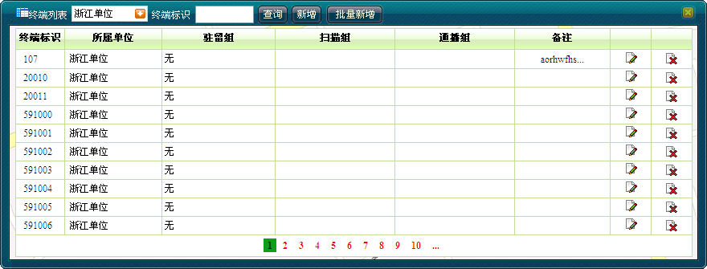
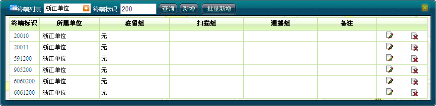
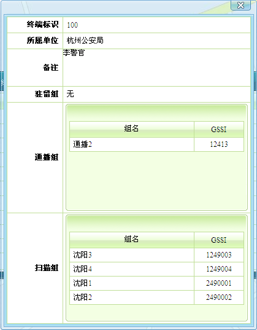

查看终端信息操作步骤如下：
查看终端信息操作步骤如下：
1）单击［基础信息/终端信息维护］，弹出终端列表。
2）在终端列表右侧选择单位名称，单击＜查询＞，则终端列表将显示该单位节点下的所有终端信息。如下图1所示。

图1. 查看某单位下终端列表
3）在终端列表右侧输入终端标识号，单击＜查询＞，则终端列表将快速检索并显示包含该标识号的所有终端信息。如下图2所示。

图2. 快速检索
4）单击终端标识，将显示该终端的详细信息。如下图3所示。

图3. 查询终端信息
 说明：
说明：
一级调度员可查看所有终端信息。
分级调度员仅可查看本分级单位及下属单位的终端信息。
若检索的终端不存在，则系统提示“没有查询到相关数据”。
Copyright © 2012 Eastcom, Inc. All rights reserved. |
||